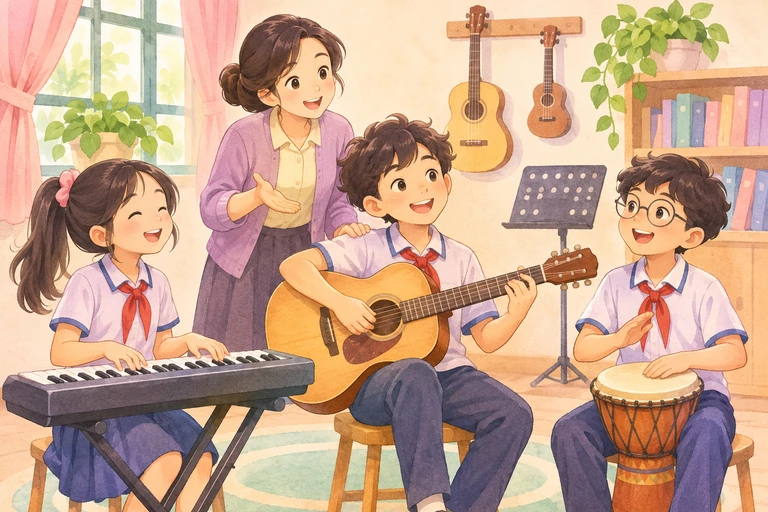
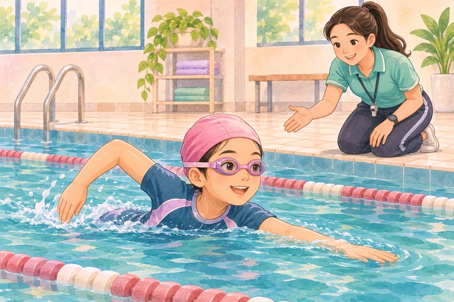

join a music club
tham gia câu lạc bộ âm nhạc
JOINAMUSICCLUB
I am going to join a music club.
Chưa đánh dấu
Unit 20 · Học trước, thử nhớ rồi luyện đề
Lên kế hoạch nghỉ hè: nơi sẽ tham quan, việc sẽ làm, nghe thường/chậm, ABC và bài luyện tự lưu.
Unit 20 có âm thanh đi kèm (giọng máy Anh Mỹ). Em có thể nghe dù máy chưa cài giọng Anh. Nếu lỗi mạng, bấm nghe lại hoặc chọn giọng thiết bị nếu có.
Bấm Nghe khi em sẵn sàng. Trang không tự phát âm thanh.
Nghe cả từ/cụm, đọc theo rồi dùng ABC để nhớ cách viết. ABC đọc tên chữ cái, không phải bài luyện âm. Với cụm nhiều từ, các nhóm chữ được tách riêng.
Chưa có từ cần ôn. Em chọn một nhóm rồi bấm “Cần ôn lại” ở từ muốn luyện thêm nhé.

tham gia câu lạc bộ âm nhạc
I am going to join a music club.
Chưa đánh dấu

đi cắm trại
I am going to go camping.
Chưa đánh dấu

tham quan trang trại sinh thái
I am going to visit an eco-farm.
Chưa đánh dấu

luyện bơi
I am going to practise swimming.
Chưa đánh dấu
trồng rau
We are going to grow vegetables on an eco-farm.
Chưa đánh dấu
học một ngôn ngữ mới
I am going to learn a new language with my friends.
Chưa đánh dấu
sông
I am going to visit the river.
Chưa đánh dấu
hang động
We are going to visit a cave.
Chưa đánh dấu
đảo
They are going to visit an island.
Chưa đánh dấu
thủy cung
She is going to visit an aquarium.
Chưa đánh dấu
sông Hương
I am going to visit Huong River.
Chưa đánh dấu
động Phong Nha
We are going to visit Phong Nha Cave.
Chưa đánh dấu
đảo Phú Quốc
He is going to visit Phu Quoc Island.
Chưa đánh dấu
thủy cung Đầm Sen
They are going to visit Dam Sen Aquarium.
Chưa đánh dấu
kỳ nghỉ hè
Our summer holidays start next week.
Chưa đánh dấu
kế hoạch
This is my summer plan.
Chưa đánh dấu
mùa hè này
I am going to go camping this summer.
Chưa đánh dấu
mùa hè năm ngoái
Last summer, I grew vegetables.
Chưa đánh dấu
tuần tới
We are going to visit the aquarium next week.
Chưa đánh dấu
học
I am going to learn to play the guitar.
Chưa đánh dấu
Nghe hội thoại rồi đọc theo. “Đến lượt em” chỉ đọc A để em nói câu trả lời của B.
A: What are you going to do this summer?
B: I am going to join a music club.
What…do hỏi hoạt động; am going to + nguyên mẫu join.
A: What is Hoa going to do this summer?
B: She is going to practise swimming.
She is; practise + swimming. Đây là mẫu luyện Anh, không phải hướng dẫn tự tập bơi.
A: Where are you going to visit this summer?
B: I am going to visit Huong River.
Where hỏi nơi. Visit + địa điểm, không visit to.
A: Where are they going to visit this summer?
B: They are going to visit Phong Nha Cave.
They are going to visit; giữ đúng tên riêng.
A: What did you do last summer?
B: I went camping. This summer, I am going to visit an eco-farm.
Last summer: đã qua → went; this summer: dự định → am going to visit.
A: What are we going to do this summer?
B: We are going to learn a new language.
We are going to. Câu hỏi Wh thường xuống giọng; ABC là tên chữ cái, không phải phonics.
Ví dụ tự soạn. Vị trí và sở thích là giả định theo từng ví dụ. Trang không thu âm hoặc tự chấm giọng của em.
Mỗi nhóm có bốn bài nhỏ, không giới hạn thời gian. Em được sửa rồi thử lại. Câu trả lời tự lưu để quay lại làm tiếp.